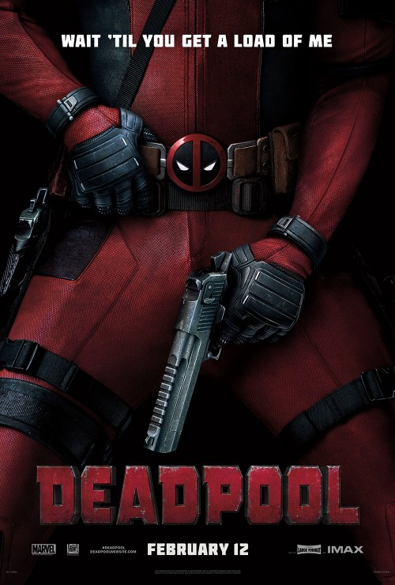

Zootopia
The modern mammal metropolis of Zootopia is a city like no other. Comprised of habitat neighborhoods like ritzy Sahara Square and frigid Tundratown, it’s a melting pot where animals from every environment live together.

Deadpool
Deadpool Synopsis Based upon Marvel Comics’ most unconventional anti-hero, DEADPOOL tells the origin story of former Special Forces operative turned mercenary Wade Wilson.
Whiskey Tango Foxtrot
When reporter Kim Baker’s (Tina Fey) life needs something more, she decides to 'shake it all up’ by taking an assignment in a war zone.